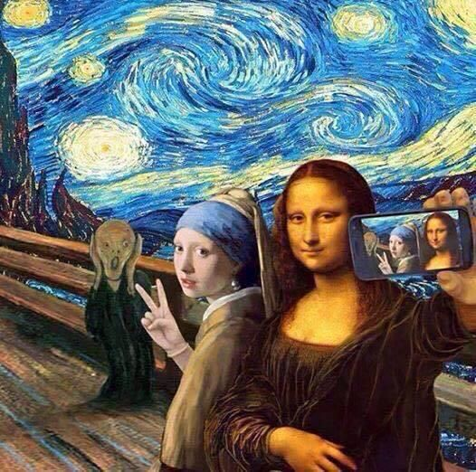
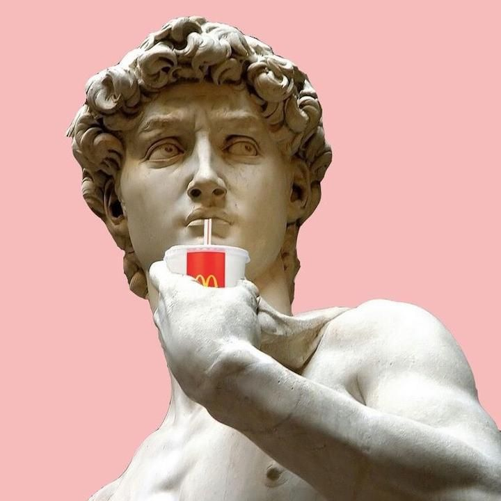
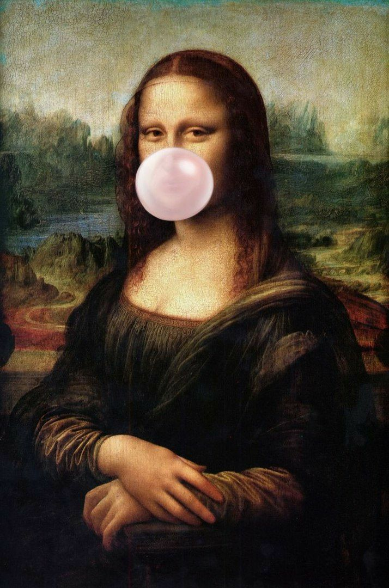

En esta página encontrarás todo tipo de información sobre el arte del renacimiento
Como:
1 Artistas reconocidos del renacimiento
| Artistas | Pinturas mas famosas |
|---|---|
| Leonardo da Vinci | "La Mona Lisa"- "La Virgen del huso"- "La última cena" |
| El Greco | "El Expolio"- "La Verónica" |
| Alberto Durero | "Adán y Eva" |
| Sandro Botticelli | "El nacimiento de Venus" |
| Rafael Sanzio | "Madonna Sixtina" |
| Pieter Brueghel | "La Torre de Babel" |
| Tiziano Vecelli | "Venus de Urbino" |
| Miguel Ángel | "La creación de Adán" |
2 Pinturas mas famosas del renacimiento
3 Características principales del arte renacentista.
4 Arte renacentista como se ve hoy
  Si desea conocer más, acerca del renacimiento. puede consultar el siguiente link
video